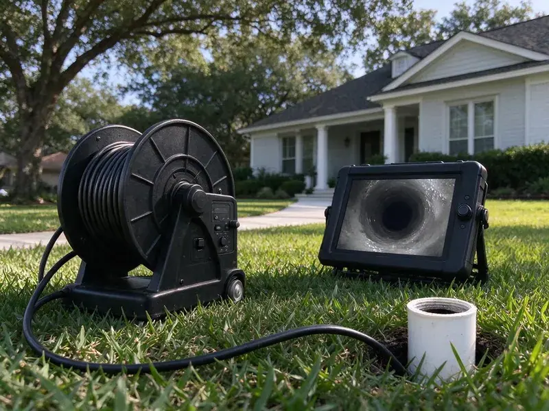

Sewer Line Replacement in Ankeny, IA
When your sewer line fails in Ankeny, IA, you need prompt, dependable replacement. KFR Plumbing provides professional solutions to restore your plumbing.
- Fast Camera Inspection
- Quick, Reliable Service
- Licensed Plumbers
- Written Workmanship Warranty
Get a Clear Sewer Line Replacement Estimate Backed by Video in Ankeny, IA.
Don't let a failing sewer line disrupt your home. Call us today for a reliable solution.
Professional Sewer Line Replacement Services in Ankeny, IA
When your sewer line is beyond repair, KFR Plumbing provides efficient and reliable sewer line replacement for Ankeny, IA residents. We handle everything from the initial inspection to final pipe installation. Your new sewer system will meet all local codes and work properly for years to come.
Our expertise includes:
- Trenchless and Traditional Sewer Line Replacement
- Trenchless & Traditional Replacement
- Modern Pipe Materials

Additional Drain Services Services in Ankeny, IA
From stubborn kitchen clogs to main sewer backups, our drain services in Ankeny, IA clear the line and keep it clear with camera-verified results.


Customers
Why Choose KFR Plumbing for Sewer Line Replacement in Ankeny, IA?
Our familiarity with local soil conditions and building codes in Iowa means your sewer line replacement is built to last.
- Long-Term Reliability, Our installations are built to last, giving you peace of mind for decades.
- Advanced Technology, We use modern equipment for accurate diagnostics and efficient replacement.
- Quality Materials, We use durable, high-grade piping materials designed to hold up in Iowa conditions.
Citywide Coverage
We understand the differences between areas within Ankeny when it comes to plumbing infrastructure. Our local knowledge helps us provide sewer line replacement tailored to the demands of your property.
Experienced Team
Our replacement crews have installed sewer laterals through clay, rock, hardpan and fill. They know how to keep proper slope over long runs and around obstacles.
Safety-First Approach
All our sewer line replacement work in Ankeny, IA is performed in full compliance with local safety standards and building codes. We obtain all necessary permits for a safe, legal installation.
Trusted Certified Ankeny Plumbing Services Professionals
At KFR Plumbing, we take pride in providing licensed, certified plumbing services throughout Ankeny, IA. Backed by recognized industry credentials, our experienced plumbers combine technical skill with genuine customer care. Whether it is repair, installation, or maintenance, we follow strict safety and quality standards to deliver long-lasting results you can trust.
Call Us Now PHCC Plumbing Contractor Recognition
PHCC Plumbing Contractor Recognition Better Business Bureau (BBB) Accreditation
Better Business Bureau (BBB) Accreditation Angi Certified Pro
Angi Certified Pro ISO 9001 Quality Management Certification
ISO 9001 Quality Management CertificationTrusted Sewer Line Replacement Services in Ankeny, IA
Trenchless Sewer Line Replacement in Ankeny, IA
To minimize disruption, trenchless sewer line replacement replaces pipes without extensive digging. We offer pipe bursting, where a new pipe is pulled through the old one, fracturing the old pipe outward. This is ideal when protecting landscaping or driveways is a priority. The method works well for many homes in Ankeny and can often be finished faster than traditional methods, using high-density polyethylene (HDPE) pipe known for its long life.

Open-Trench Sewer Replacement in Ankeny, IA
Traditional excavation is sometimes the best option, especially when the old line has a severe belly or the slope must be corrected. We dig along the line, remove the old pipe and set new PVC on compacted bedding at the correct grade. Rocky or hard-packed soil can slow digging, and we plan for that in the estimate. Each joint is glued and checked before backfill. The inspector sees the open trench before we close it up.
Preventative Measures After Replacement in Ankeny
Once your sewer line is replaced, we can advise on steps to extend its lifespan. This includes landscaping choices that won't interfere with your new pipes, proper waste disposal habits, and regular inspections. Much of Iowa sits on rich, thick soil over glacial clay, which holds water and can push against basement walls and drain tile. We also talk through how trees and soil movement near your home can affect the line and what you can do to minimize future risks. That keeps your new system in Ankeny trouble-free.
Commercial Sewer Line Replacement in Ankeny
Businesses in Ankeny rely on dependable plumbing systems. A failing commercial sewer line can lead to significant operational disruptions and health hazards. KFR Plumbing provides efficient, professional commercial sewer line replacement, minimizing downtime for your business. We work quickly to restore your sewer system, following all commercial codes and standards.
Permitting and Code Compliance in Ankeny, IA
Sewer line replacement projects in Ankeny, IA often require permits and must meet local plumbing codes. KFR Plumbing handles the permitting process and makes sure every part of the replacement meets or exceeds municipal standards. Our understanding of local regulations means your new sewer line is installed correctly and safely. That helps you avoid possible fines or future issues.
Sewer Line Materials & Brands in Ankeny, IA
We work with a variety of proven sewer line materials and trusted brands for durability and performance. Options include PVC (polyvinyl chloride) for its corrosion resistance, ABS (acrylonitrile butadiene styrene) for its strength, and sometimes modern cast iron for specific applications. We source our pipe from established manufacturers that meet industry standards. Much of Iowa sits on rich, thick soil over glacial clay, which holds water and can push against basement walls and drain tile. Our team helps you choose the best material for your situation and budget.
Trenchless Pipe Bursting in Ankeny
Pipe bursting replaces the old sewer line by pulling a new pipe through the path of the old one. A bursting head breaks the old pipe outward while fused HDPE pipe follows behind. This typically needs only an entry pit and an exit pit instead of a long trench. It works well under driveways, mature trees and landscaping. The new pipe is seamless, which leaves no joints for roots to enter.

Emergency Sewer Line Replacement in Ankeny, IA
Sewer line emergencies demand immediate attention. A complete sewer line collapse or severe blockage can cause raw sewage to back up into your property. KFR Plumbing offers emergency sewer line replacement across Ankeny, IA, responding promptly to limit damage and restore your system. Our emergency team is equipped to handle urgent situations with the right tools and expertise, 24/7.
Sewer Line Replacement Near Me in Ankeny, IA
Choosing a local company for sewer line replacement means faster scheduling and a team that knows local permit rules. We work with the Ankeny building department regularly. That helps keep your project on schedule.
When you search for 'sewer line replacement near me' in Ankeny, IA, you'll find KFR Plumbing as a trusted local expert. We know the plumbing infrastructure and local conditions that affect sewer lines in our area.
KFR Plumbing at a Glance
- Fully licensed plumbing team covering Ankeny, IA
- 24/7 emergency service with same-day scheduling
- Clear written estimates, no hidden fees
- 4.8-star rated by 620+ Iowa customers
Ankeny Map
Ankeny Information
- Population
- 74,458
- Area codes
- 515/641/319
- Service area
- Ankeny and communities within 40 miles
- Nearby
- Des Moines, Urbandale, West Des Moines, Waukee
Proper sewer line replacement matters for homes in Ankeny, IA, because tree roots and moving soil can severely damage older sewer pipes. Iowa has many older homes and farmhouses with cast iron drains, galvanized supply lines, and clay sewer pipe.
Expert Services
Trust our professionals for reliable KFR Plumbing solutions in Ankeny, IA.
Our Specialized Plumbing Services in Ankeny, IA
At KFR Plumbing, we provide a complete range of plumbing services across Ankeny, IA. From leak detection to full system installations, our team ensures fast, precise, and affordable service for both residential and commercial properties. Explore our core services below:


How Our Sewer Line Replacement Process Works in Ankeny, IA
Replacing a sewer line is a project, and we manage it from inspection to final restoration.
Request a Quote
Call (515) 308-3583 or fill out our online form to schedule a first visit. We'll discuss your concerns and set up a convenient time for an on-site visit.
Diagnosis and Plan
Our technicians use camera inspections to pinpoint the sewer line issue. We then develop a detailed replacement plan, explaining the best method and materials for your specific situation.
Permits and Prep
We handle all necessary permits with Ankeny authorities before any work begins. Our team prepares the site, ensuring safety in mind and minimizing disruption to your property.
Frequently Asked Questions About Sewer Line Replacement in Ankeny
The cost of sewer line replacement in Ankeny, IA can range from $4,000 to $20,000 or more, depending on the length of the pipe, depth, replacement method, and the materials used. Trenchless work often costs more upfront but saves on landscaping. A trenchless job might run $80 to $250 per foot, while traditional excavation could be $50 to $200 per foot, not including restoration. We provide a written quote after a thorough inspection.
Repeated backups, sewage odors in the yard, soggy spots, and camera footage showing collapse, major cracks or long bellies are clear signs. A camera inspection gives a clear answer.
The duration depends on the complexity and method. A trenchless replacement might take 1 to 3 days, while a traditional trenched replacement could take 3 to 5 days, sometimes longer for larger projects. We will give you a clear timeline estimate during your consultation.
It is a major project that involves excavation, slope calculations, permits and inspection. Most homeowners find hiring a licensed plumber is the safer choice and avoids expensive mistakes.
Modern sewer lines made from materials like PVC or HDPE, when properly installed, can last 50 to 100 years or longer. This is a significant improvement over older materials like cast iron or clay, which typically have a shorter lifespan.
Sewer line replacement is a complex job that requires specialized equipment, permits, and expertise in excavation, pipe fitting, and local plumbing codes. It is not a suitable DIY project and should always be handled by licensed, experienced professionals for safety and compliance.
Traditional replacement involves digging a trench to access and replace the entire pipe, which can be more invasive to your yard. Trenchless methods, like pipe bursting or pipe lining, require minimal digging, often just two access points, protecting your landscaping while installing a new pipe.
Yes, sewer line replacement is a major plumbing project that usually requires a permit from Ankeny's building or public works department. KFR Plumbing handles all necessary permit applications and makes sure all work meets local and state plumbing codes in Iowa for a legal, safe installation.
What People Are Saying About Our Plumbing Experts?

Mark T.
When our office needed drain cleaning, KFR Plumbing provided quick, reliable service. The plumber arrived on time and made sure every drain flowed perfectly before leaving. Very satisfied.
Drain Cleaning · Urbandale, IA
James P.
Our commercial plumbing system had a leak under the sink, and KFR Plumbing handled it professionally. The plumbers arrived quickly and restored everything without disruption to our customers.
Commercial Plumbing · West Des Moines, IA
Laura S.
I scheduled a water heater replacement, and the team made the process smooth and affordable. The new unit works perfectly, and they cleaned up after completing the job.
Water Heater Replacement · Ankeny, IARobert G.
The trenchless sewer replacement saved our front yard. They walked us through the camera inspection footage first so we knew exactly what we were paying for.
Sewer Line Replacement · Ames, IASofia M.
Two new toilets installed in one visit, no mess left behind, and the tech even adjusted a faucet he noticed was dripping. Fair pricing and really friendly.
Toilet Installation · Ankeny, IA
Emily R.
I called KFR Plumbing for plumbing repair, and the technician was fast, polite, and thorough. They explained the problem clearly and fixed it the same day. I will definitely hire them again. Highly recommended!
Plumbing Repair · Des Moines, IA